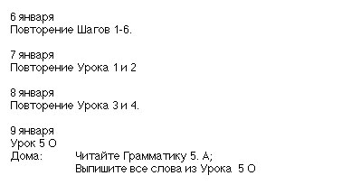
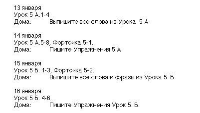
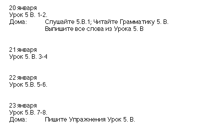
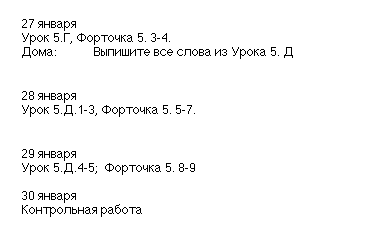
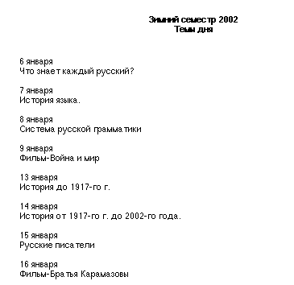
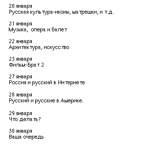

COURSE NUMBER - Assignments.

RU102
Intensive Basic RussianLanguage and Culture
Winter Term 2003
Class Assignments
The following page provides course assignment information. Assignments and dates are tentative and maybe adjusted depending class progress. Please send comments or questions to tom.beyer@middlebury.edu
Language assignments



Literature Assignments
For every short story, novella, and section of a novel that you read, you should fill out a short summary of no more than twenty five words that answers the questions: Who, What, Where, When, How and Why.
In addition for one selection from each day's assignment you should pose a question about the text, that you attempt to answer in one hundred words or less.
Print out your assignment, place it in your binder, and bring it to class. Send a security copy via e-mail directly to me.
Jan. 6
Read Pushkin, "Queen of Spades" and "Amateur Peasant Girl"
Jan. 7
Read Pushkin, "Shot" and "Snowstorm"
Jan. 8
Read Pushkin, "Postmaster" and "Coffin Maker"
Jan. 9
Read Gogol, "Old Fashioned Farmers" and "The Tale"
Jan. 13
Read Gogol, "The Nose" and "The Overcoat"
Jan. 14
Read Turgenev, Fathers and Sons, I-XX
Jan. 15
Read Turgenev, Fathers and Sons, XX-XXVIII
Jan. 16
Read Dostoevsky, Notes I
Jan. 20
Read Dostoevsky, Notes II
Jan. 21
Read Tolstoy, "How much land?" Death of Ivan Ilych.
Jan. 22
Read Tolstoy, Kreutzer Sonata
Jan. 23
Read Chekhov, Stories
Jan. 27
Read Gorky, "Chelkash"
Jan. 28
Read Gorky, "Makar Chudra" and "Twenty Six Men and a Girl."
Internet Assignments
Cultural themes
Parallel to the culture presentations you have chosen several key words or names for research. You should plan on spending approximately 30 minutes on the internet gathering your information, by using search engines in English and Russian to research the topic. The presentation should be in the form of a one page overview that includes a 100-150 word narrative summary about the person, place or item, and then a brief review of the most useful sites (at least five with at least two in Russian) with the hyperlink addresses. Make a print out of your summary page and the five best sites to place into a three binder. In addition you should e-mail a copy of the summary directly to me.

